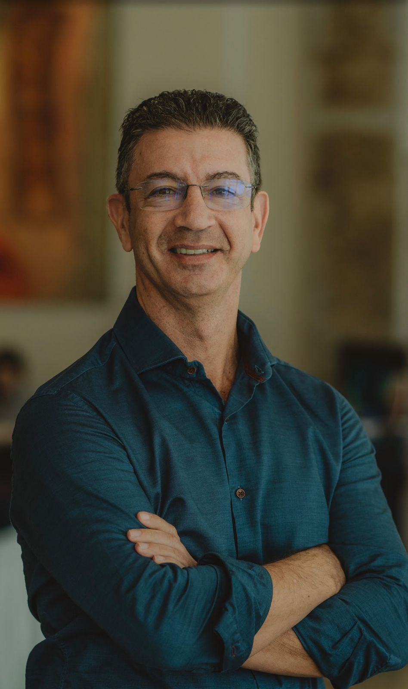
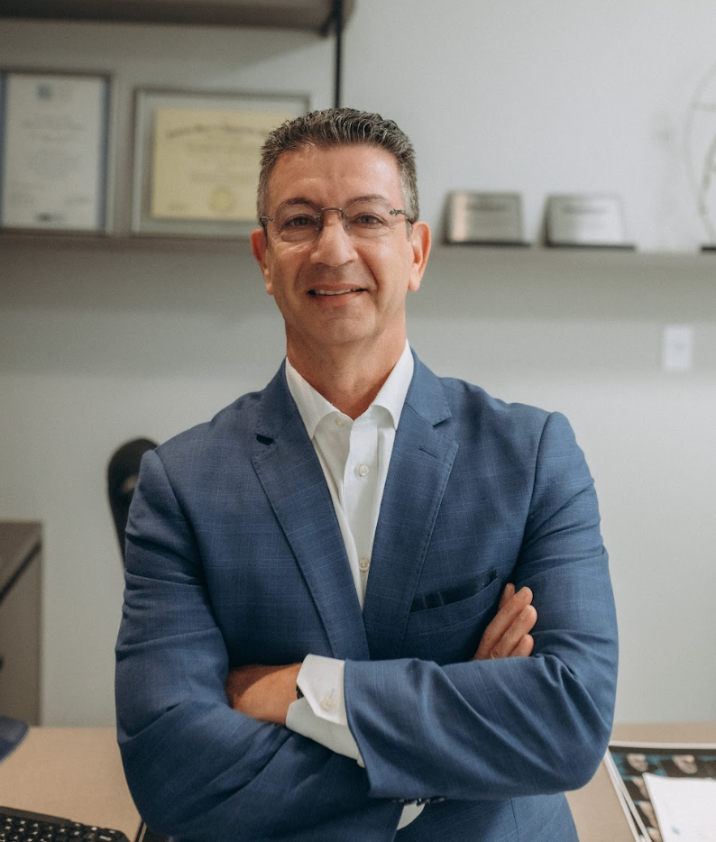
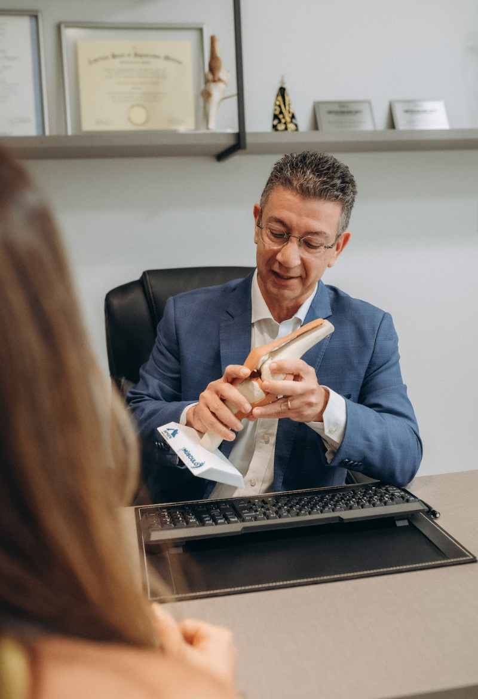
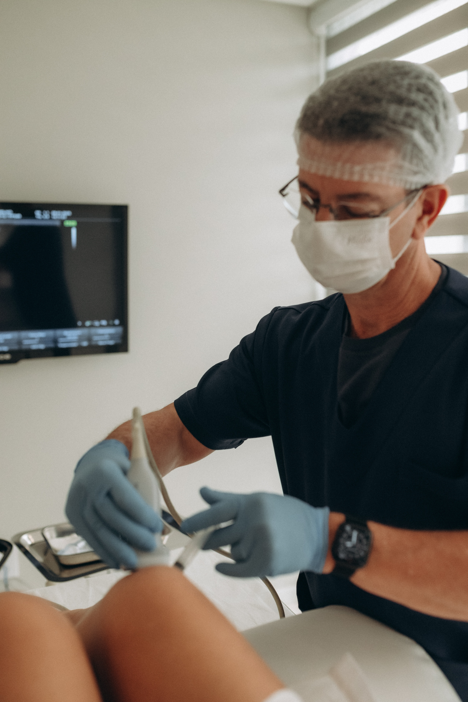
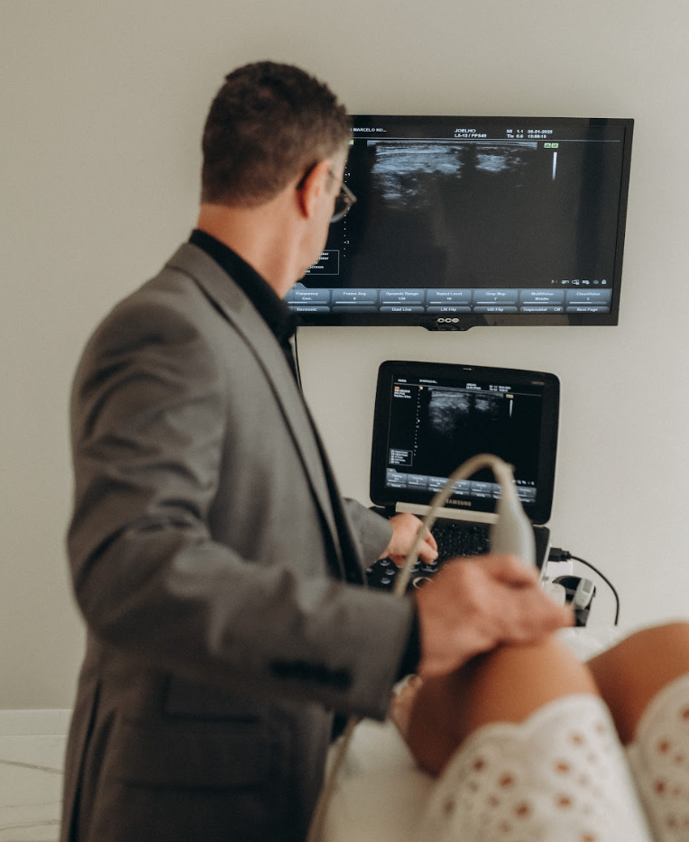

Joelho
Lesões de menisco e ligamentos (LCA), artrose e dores articulares. Principal foco cirúrgico e regenerativo.
Ortopedia · Medicina Regenerativa · Dor Crônica
Ortopedista e traumatologista há mais de 24 anos. Uno medicina regenerativa avançada, REAC, Ozonioterapia e PRP, a uma visão integrativa para tratar a sua dor e preservar as suas articulações, priorizando o não cirúrgico.
CRM 7670-SC · RQE 2621


Sobre o médico
Ortopedista e traumatologista com mais de 24 anos de atuação, com foco em patologias do joelho e no tratamento da dor crônica.
Membro da Sociedade Brasileira de Cirurgia do Joelho e da Academia Americana de Medicina Regenerativa, Dor Crônica e Fibromialgia, une a técnica cirúrgica a uma abordagem integrativa: prioriza tratamentos não cirúrgicos sempre que possível, recorrendo à cirurgia apenas quando é a melhor indicação.
Trabalha com medicina regenerativa avançada, REAC, Ozonioterapia e PRP, e procedimentos guiados por ultrassom. Atende em Balneário Camboriú, Joinville e São Paulo.
Áreas de atuação
Do joelho à coluna, do esporte de alto rendimento à dor que não passa. Um olhar completo sobre a origem da dor e a recuperação.
Lesões de menisco e ligamentos (LCA), artrose e dores articulares. Principal foco cirúrgico e regenerativo.
Investigação e manejo integrativo de dores persistentes, com foco em qualidade de vida.
Abordagem integrativa e neuromodulação para a dor difusa, com atenção ao paciente como um todo.
Cervicalgia, lombalgia e hérnia de disco, com foco no alívio da dor e na função.
Tendinites, bursites e dores do manguito rotador que limitam o movimento.
Recuperação e prevenção para atletas e praticantes, com foco em longevidade articular.

Como funciona
Cada caso começa com uma avaliação ampla. O objetivo é entender a origem real da dor e escolher o caminho menos invasivo que resolva o problema.
Anamnese detalhada e exame físico, olhando o paciente como um todo.
Exames de imagem e avaliação clínica para localizar a verdadeira origem da dor.
REAC, Ozonioterapia, PRP e procedimentos guiados por ultrassom, priorizando o mínimo invasivo.
Quando é a melhor indicação, técnicas minimamente invasivas como a artroscopia de joelho.
Tecnologia que trata a causa da dor e estimula a recuperação dos tecidos, ajudando a preservar as articulações e a evitar cirurgias. Três pilares, com fundamentação científica.
O REAC (Radio Electric Asymmetric Conveyer) é uma tecnologia de neuromodulação não invasiva, desenvolvida pelo Instituto Rinaldi Fontani (Itália). Atua na forma como o sistema nervoso processa a dor e regula respostas do corpo.
Evidências: revisão integrativa sobre REAC em distúrbios motores, Frontiers in Medical Technology (2023); estudo em fibromialgia, PubMed (2023).

Aplicação de uma mistura de oxigênio e ozônio médico com ação anti-inflamatória e analgésica. Muito utilizada na artrose de joelho e em dores musculoesqueléticas, como parte de um plano de tratamento sem cirurgia.
Evidências: revisão guarda-chuva de revisões sistemáticas na artrose de joelho, PMC (2024).

O PRP (Plasma Rico em Plaquetas) usa um concentrado do sangue do próprio paciente, rico em fatores de crescimento, para estimular a reparação dos tecidos. Aplicado de forma guiada por ultrassom, é um dos pilares da medicina regenerativa no joelho.
Evidências: meta-análise de ensaios clínicos no joelho, PMC (2021); comparação com ácido hialurônico, PubMed.
As informações desta seção são educativas e não substituem uma consulta. A indicação de cada tratamento depende de avaliação individual.

Caso real · Alta performance
Com uma carga de treino intensa, atletas de elite precisam de articulações que durem. Com medicina regenerativa avançada, o Dr. Marcelo trabalha a longevidade articular, ajudando a renovar o joelho para a nova temporada e a evitar o desgaste grave e intervenções cirúrgicas agressivas.
A mesma tecnologia usada em superatletas está disponível para você preservar as suas articulações.
Tratamentos e procedimentos
Do consultório ao centro cirúrgico, com foco em recuperar a função e a qualidade de vida.
Avaliação completa de ortopedia e traumatologia, presencial ou por telemedicina.
Viscosuplementação e infiltrações precisas na articulação, guiadas por ultrassom.
Cirurgia minimamente invasiva para lesões de menisco e cartilagem.
Reconstrução do ligamento cruzado e demais ligamentos do joelho.
Artroplastia do joelho assistida por robô, com planejamento individualizado e precisão no posicionamento do implante.
Manejo integrativo e neuromodulação para dores persistentes.
Recuperação e prevenção para atletas, com foco em longevidade articular.
Consultas e acompanhamento a distância, com segurança e comodidade.
Cada caso é único. Fale comigo para saber o melhor tratamento para a sua dor.
Falar sobre o meu casoAgende uma avaliação e descubra o caminho de tratamento mais adequado para o seu caso.
68 avaliações reais de pacientes
"Dr Marcelo além de ser paciente e solícito é extremamente competente. Cumpre com os horários, a clínica é aconchegante. Ele te ouve com calma, não é aqueles médicos que querem atendimento estilo fast-food que em 10min querem te expulsar da sala. Sempre disposto a dar o melhor tratamento antes de sugerir uma cirurgia. Profissional excelente!"
"O Dr. Kodja é um médico muito cuidadoso, atencioso e preocupado com a saúde e bem estar de nós que somos pacientes. Deixando-nos confiantes de um tratamento eficiente. Sou muito grata à ele e toda a equipe por tudo que nos fazem. Parabéns. Malicé"
"Sempre fui muito bem atendida! A equipe é dedicada, competente e muito receptiva! Com certeza, representando com excelência o otimo trabalho do Dr. Marcelo que é nota mil!!"
Fale comigo
Atendimento com hora marcada em Balneário Camboriú, Joinville e São Paulo. Chame no WhatsApp para agendar a sua avaliação.
Av. Carlos Drummond de Andrade, 789
Praia Brava
R. Aracaju, 1382
Santo Antônio
Av. Jamaris, 100 - Conj. 1301
Moema